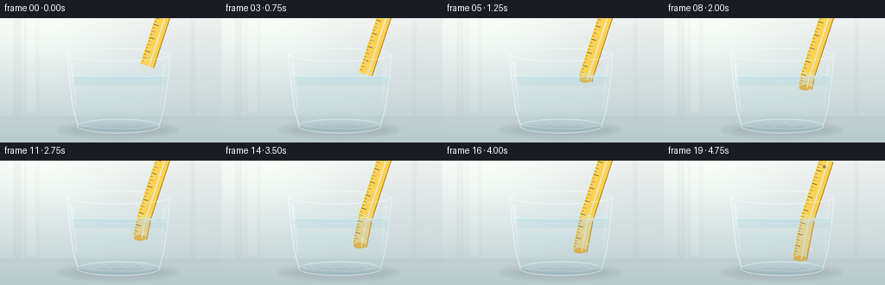
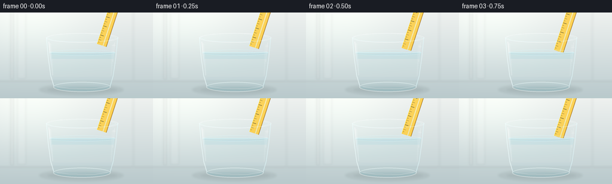

CODING AGENTS AS PIXEL WORLD MODELS
traex/GPT-5.6-Sol · phygen_075
点击播放 · 原生 RGB 像素
逐轮保存的候选
回放视频、检查图与代码变化。
每份候选均可单独播放。实际图片检查记录在下方工具轨迹中。
候选 01播放与检查图
点击播放 · 原生 RGB 像素


展开代码变化
--- 上一保存版本
+++ 本次保存版本
@@ -0,0 +1,233 @@
+from pathlib import Path
+import math
+import json
+import numpy as np
+from PIL import Image, ImageDraw, ImageFont, ImageFilter
+import artifact_io
+
+CASE_DIR = Path(__file__).resolve().parent
+spec = json.loads((CASE_DIR / 'task_spec.json').read_text())
+W, H, N = spec['width'], spec['height'], spec['frames']
+S = 4
+w, h = W*S, H*S
+
+def C(v):
+ return int(round(v*S))
+def pts(seq):
+ return [(C(x), C(y)) for x,y in seq]
+def bbox(b):
+ return tuple(C(x) for x in b)
+
+def rgba_layer():
+ return Image.new('RGBA', (w,h), (0,0,0,0))
+
+def composite(base, layer):
+ return Image.alpha_composite(base, layer)
+
+def line(draw, xy, fill, width=1, joint='curve'):
+ draw.line(pts(xy), fill=fill, width=max(1,C(width)), joint=joint)
+
+def ellipse(draw, b, fill=None, outline=None, width=1):
+ draw.ellipse(bbox(b), fill=fill, outline=outline, width=max(1,C(width)))
+
+def polygon(draw, xy, fill):
+ draw.polygon(pts(xy), fill=fill)
+
+# fixed geometry
+water_y = 67.0
+d = np.array([-0.310, 0.951]) # top -> lower tip
+nvec = np.array([-d[1], d[0]]) # across the ruler
+ruler_len = 127.0
+ruler_half = 8.1
+
+def transform_under(p):
+ """Apparent position through water: shallower and laterally displaced."""
+ x,y = float(p[0]), float(p[1])
+ depth = max(0.0, y-water_y)
+ return np.array([x + 0.155*depth, water_y + 0.875*depth])
+
+def cross_at_y(tip, yy):
+ # tip - d*s intersects y=yy
+ s = (tip[1]-yy)/d[1]
+ return tip - d*s
+
+def ruler_polygon(top, tip, underwater=False):
+ def tf(p): return transform_under(p) if underwater else p
+ return [tf(top+nvec*ruler_half), tf(tip+nvec*ruler_half),
+ tf(tip-nvec*ruler_half), tf(top-nvec*ruler_half)]
+
+def draw_ruler_segment(tip, underwater=False):
+ lay = rgba_layer(); dr = ImageDraw.Draw(lay, 'RGBA')
+ full_top = tip - d*ruler_len
+ if underwater:
+ if tip[1] <= water_y: return lay
+ top = cross_at_y(tip, water_y)
+ bottom = tip
+ poly = ruler_polygon(top, bottom, True)
+ polygon(dr, poly, (225,172,40,230))
+ # transparent inner amber panel and both bevels
+ q = [transform_under(top+nvec*(ruler_half-1.2)), transform_under(bottom+nvec*(ruler_half-1.2)),
+ transform_under(bottom-nvec*(ruler_half-1.2)), transform_under(top-nvec*(ruler_half-1.2))]
+ polygon(dr, q, (245,190,52,115))
+ line(dr, [transform_under(top+nvec*ruler_half), transform_under(bottom+nvec*ruler_half)], (255,238,123,190), 0.8)
+ line(dr, [transform_under(top-nvec*ruler_half), transform_under(bottom-nvec*ruler_half)], (112,78,20,130), 0.8)
+ # rounded-looking tip cap
+ qb=transform_under(bottom)
+ ellipse(dr, (qb[0]-7.1,qb[1]-3.2,qb[0]+7.1,qb[1]+3.2), (221,164,35,190))
+ # ticks, fixed to the moving ruler
+ for mark in np.arange(4.0, ruler_len, 4.0):
+ p = tip - d*mark
+ if p[1] < water_y+0.5 or p[1] > tip[1]+1: continue
+ major = (round(mark) % 16 == 0)
+ medium = (round(mark) % 8 == 0)
+ length = 6.3 if major else (4.5 if medium else 2.8)
+ a = p + nvec*(ruler_half-0.7)
+ b = p + nvec*(ruler_half-length)
+ line(dr, [transform_under(a), transform_under(b)], (50,45,27,205), 0.72 if major else 0.5)
+ # glossy stripe along plastic
+ a=transform_under(top-nvec*2.0); b=transform_under(bottom-nvec*2.0)
+ line(dr,[a,b],(255,240,157,55),1.25)
+ else:
+ top, bottom = full_top, tip
+ poly = ruler_polygon(top, bottom, False)
+ polygon(dr, poly, (250,190,42,248))
+ inner=[top+nvec*(ruler_half-1.2),bottom+nvec*(ruler_half-1.2),bottom-nvec*(ruler_half-1.2),top-nvec*(ruler_half-1.2)]
+ polygon(dr,inner,(255,205,61,215))
+ line(dr,[top+nvec*ruler_half,bottom+nvec*ruler_half],(255,239,115,245),0.85)
+ line(dr,[top-nvec*ruler_half,bottom-nvec*ruler_half],(132,83,12,210),0.85)
+ # translucent molded center channel
+ line(dr,[top-nvec*2.2,bottom-nvec*2.2],(255,231,117,105),1.4)
+ for mark in np.arange(4.0, ruler_len, 4.0):
+ p=tip-d*mark
+ major=(round(mark)%16==0); medium=(round(mark)%8==0)
+ length=6.3 if major else (4.5 if medium else 2.8)
+ a=p+nvec*(ruler_half-0.7); b=p+nvec*(ruler_half-length)
+ line(dr,[a,b],(45,39,23,235),0.72 if major else 0.5)
+ # little circular hanging hole, if the top end is in frame
+ hole=top+d*8.5
+ if -5 < hole[1] < H+5:
+ ellipse(dr,(hole[0]-2.6,hole[1]-2.6,hole[0]+2.6,hole[1]+2.6),(119,83,19,170),(255,224,99,220),0.7)
+ # Clip the dry rendering cleanly at the animated water surface.
+ mask=Image.new('L',(w,h),0); md=ImageDraw.Draw(mask)
+ md.rectangle((0,0,w,C(water_y+0.15)),fill=255)
+ lay.putalpha(Image.composite(lay.getchannel('A'),Image.new('L',(w,h),0),mask))
+ return lay
+
+def make_frame(i):
+ t=i/(N-1)
+ # Pale kitchen/studio background, subtly warm at top and cool at bottom.
+ yy=np.linspace(0,1,h)[:,None,None]
+ top=np.array([238,241,239],dtype=float)[None,None,:]
+ bot=np.array([189,205,208],dtype=float)[None,None,:]
+ arr=np.broadcast_to(top*(1-yy)+bot*yy,(h,w,3)).copy()
+ # soft light from upper left
+ X,Y=np.meshgrid(np.arange(w)/S,np.arange(h)/S)
+ glow=np.exp(-((X-53)**2/(2*66**2)+(Y-18)**2/(2*52**2)))[...,None]
+ arr=np.clip(arr+glow*np.array([13,14,11]),0,255).astype(np.uint8)
+ base=Image.fromarray(arr,'RGB').convert('RGBA')
+
+ # blurred vertical window reflections in background
+ bg=rgba_layer(); bd=ImageDraw.Draw(bg,'RGBA')
+ bd.rectangle((C(18),0,C(22),C(112)),fill=(255,255,255,34))
+ bd.rectangle((C(29),0,C(43),C(111)),fill=(255,255,255,18))
+ bd.rectangle((C(222),0,C(224),C(115)),fill=(112,144,150,15))
+ # tabletop edge and contact shadows
+ bd.rectangle((0,C(116),w,h),fill=(150,168,169,24))
+ line(bd,[(0,116),(256,116)],(255,255,255,75),0.7)
+ ellipse(bd,(65,119,207,140),(55,70,69,28))
+ ellipse(bd,(79,124,196,135),(47,63,63,42))
+ bg=bg.filter(ImageFilter.GaussianBlur(C(1.8)))
+ base=composite(base,bg)
+
+ # Rear shell of crystal-clear tumbler.
+ glass=rgba_layer(); gd=ImageDraw.Draw(glass,'RGBA')
+ polygon(gd,[(77.5,42),(197,42),(184.2,125.5),(90,125.5)],(224,244,246,20))
+ ellipse(gd,(77,34.5,198,50.5),(231,249,250,16),(255,255,255,105),1.0)
+ # rear rim arc impression
+ line(gd,[(79,42),(86,38.2),(101,36),(137,35),(178,37),(194,42)],(248,255,255,115),0.8)
+ base=composite(base,glass)
+
+ # Clear water body (very light cyan; background remains visible).
+ water=rgba_layer(); wd=ImageDraw.Draw(water,'RGBA')
+ polygon(wd,[(82.5,67),(192.5,67),(184,124),(90.2,124)],(102,200,217,33))
+ ellipse(wd,(90,115.5,184,132),(88,181,196,29))
+ # soft horizontal depth bands
+ wd.rectangle((C(86),C(78),C(190),C(112)),fill=(137,214,226,9))
+ wd.rectangle((C(89),C(108),C(187),C(124)),fill=(72,170,193,10))
+ base=composite(base,water)
+
+ # Ruler translates down exactly along its own axis.
+ travel=68.0*t
+ tip=np.array([170.0,55.0])+d*travel
+ base=composite(base,draw_ruler_segment(tip,underwater=True))
+
+ # Moving, refracted light and tiny bubbles in the water.
+ fx=rgba_layer(); fd=ImageDraw.Draw(fx,'RGBA')
+ immersion=max(0.0,tip[1]-water_y)
+ if immersion>1:
+ # A few pin bubbles released from the freshly immersed plastic.
+ for k in range(3):
+ phase=i*0.58+k*1.73
+ bx=166.8+4.2*math.sin(phase)
+ by=water_y+9+((i*2.25+k*13.0)%42)
+ if by < min(121, water_y+immersion*0.9):
+ r=0.8+0.28*k
+ ellipse(fd,(bx-r,by-r,bx+r,by+r),(236,253,255,20),(238,255,255,135),0.45)
+ # shifting caustic strokes on glass bottom
+ for k in range(4):
+ x0=103+k*19+2.3*math.sin(i*.34+k)
+ line(fd,[(x0,119),(x0+8,125),(x0+17,121)],(226,253,255,58),0.65)
+ base=composite(base,fx)
+
+ # Dry ruler remains crisp and warmer than its refracted continuation.
+ base=composite(base,draw_ruler_segment(tip,underwater=False))
+
+ # Water surface: bright back edge, disturbed meniscus and concentric glints.
+ surf=rgba_layer(); sd=ImageDraw.Draw(surf,'RGBA')
+ # faint surface sheet
+ ellipse(sd,(82,62.3,193,72.2),(177,229,237,16),(220,251,255,92),0.65)
+ entry_x=166.7
+ amp=(0.25 if immersion<=0 else 1.05*(1-math.exp(-immersion/8.0)))
+ curve=[]
+ for x in np.linspace(83,192,120):
+ local=math.exp(-((x-entry_x)/19.0)**2)
+ y=water_y + amp*local*math.sin((x-entry_x)*0.36+i*0.42)*0.7
+ curve.append((x,y))
+ line(sd,curve,(218,251,255,190),0.72)
+ line(sd,[(84,68.7),(105,70.5),(139,71.1),(176,69.8),(191,67.5)],(70,166,190,70),0.55)
+ if immersion>0:
+ pulse=math.sin(i*.72)*0.6
+ ellipse(sd,(entry_x-10-pulse,water_y-2.0,entry_x+10+pulse,water_y+2.4),None,(242,255,255,125),0.6)
+ ellipse(sd,(entry_x-18+pulse,water_y-3.2,entry_x+18-pulse,water_y+3.5),None,(171,226,237,65),0.45)
+ base=composite(base,surf)
+
+ # Front glass contours and clean vertical specular reflections.
+ front=rgba_layer(); fd=ImageDraw.Draw(front,'RGBA')
+ line(fd,[(77.5,41.5),(80.5,75),(84.7,106),(90.2,124.4)],(239,254,255,155),1.15)
+ line(fd,[(197,41.5),(193.7,75),(189.3,106),(184.1,124.5)],(226,249,252,145),1.15)
+ line(fd,[(81.5,49),(83.7,72),(86.5,93)],(255,255,255,125),1.4)
+ line(fd,[(191.8,50),(190.1,68),(188.7,83)],(255,255,255,75),0.8)
+ # narrow bright highlight and a broad subtle counterpart
+ polygon(fd,[(83,52),(85,51),(89,105),(87,106)],(255,255,255,45))
+ polygon(fd,[(187,54),(190,53),(187,105),(185,107)],(255,255,255,22))
+ # thick optical base
+ ellipse(fd,(89,116.5,185,133.2),(210,242,245,18),(242,255,255,135),1.05)
+ line(fd,[(93,126.3),(105,129.3),(145,131),(173,128.9),(182,125.4)],(112,181,193,80),0.65)
+ line(fd,[(95,124.6),(115,127),(158,127.7),(180,124.2)],(255,255,255,112),0.8)
+ # foreground portion of lip
+ line(fd,[(78.5,42.5),(88,46.8),(112,49),(147,49.5),(180,47.4),(196.4,42.4)],(232,253,255,155),0.8)
+ base=composite(base,front)
+
+ # tiny star glints make the changing reflection interaction obvious
+ gl=rgba_layer(); g=ImageDraw.Draw(gl,'RGBA')
+ gx=190.5; gy=55+5*math.sin(i*.24)
+ line(g,[(gx-2.7,gy),(gx+2.7,gy)],(255,255,255,100),0.5)
+ line(g,[(gx,gy-2.7),(gx,gy+2.7)],(255,255,255,100),0.5)
+ base=composite(base,gl)
+
+ out=base.convert('RGB').resize((W,H),Image.Resampling.LANCZOS)
+ return np.asarray(out,dtype=np.uint8)
+
+frames=np.stack([make_frame(i) for i in range(N)],axis=0)
+artifact_io.save(frames, CASE_DIR)
+print(f'saved {frames.shape}, dtype={frames.dtype}, range=({frames.min()},{frames.max()})')
可观测工具轨迹
实际执行的命令与返回图片。
命令 1exit 0
/bin/bash -lc "cat prompt.txt && printf '\\n--- GENERATION_RULES.md ---\\n' && cat GENERATION_RULES.md"
命令 2exit 0
/bin/bash -lc "printf '%s\\n' '--- task_spec.json ---' && cat task_spec.json && printf '%s\\n' '--- directory ---' && find . -maxdepth 2 -type f -printf '%p\\n' | sort"
命令 3exit 0
/bin/bash -lc 'cat artifact_io.py'
命令 4exit 0
/bin/bash -lc "cat > generate.py <<'PY'
from pathlib import Path
import math
import json
import numpy as np
from PIL import Image, ImageDraw, ImageFont, ImageFilter
import artifact_io
CASE_DIR = Path(__file__).resolve().parent
spec = json.loads((CASE_DIR / 'task_spec.json').read_text())
W, H, N = spec['width'], spec['height'], spec['frames']
S = 4
w, h = W*S, H*S
def C(v):
return int(round(v*S))
def pts(seq):
return [(C(x), C(y)) for x,y in seq]
def bbox(b):
return tuple(C(x) for x in b)
def rgba_layer():
return Image.new('RGBA', (w,h), (0,0,0,0))
def composite(base, layer):
return Image.alpha_composite(base, layer)
def line(draw, xy, fill, width=1, joint='curve'):
draw.line(pts(xy), fill=fill, width=max(1,C(width)), joint=joint)
def ellipse(draw, b, fill=None, outline=None, width=1):
draw.ellipse(bbox(b), fill=fill, outline=outline, width=max(1,C(width)))
def polygon(draw, xy, fill):
draw.polygon(pts(xy), fill=fill)
# fixed geometry
water_y = 67.0
d = np.array([-0.310, 0.951]) # top -> lower tip
nvec = np.array([-d[1], d[0]]) # across the ruler
ruler_len = 127.0
ruler_half = 8.1
def transform_under(p):
\"\"\"Apparent position through water: shallower and laterally displaced.\"\"\"
x,y = float(p[0]), float(p[1])
depth = max(0.0, y-water_y)
return np.array([x + 0.155*depth, water_y + 0.875*depth])
def cross_at_y(tip, yy):
# tip - d*s intersects y=yy
s = (tip[1]-yy)/d[1]
return tip - d*s
def ruler_polygon(top, tip, underwater=False):
def tf(p): return transform_under(p) if underwater else p
return [tf(top+nvec*ruler_half), tf(tip+nvec*ruler_half),
tf(tip-nvec*ruler_half), tf(top-nvec*ruler_half)]
def draw_ruler_segment(tip, underwater=False):
lay = rgba_layer(); dr = ImageDraw.Draw(lay, 'RGBA')
full_top = tip - d*ruler_len
if underwater:
if tip[1] <= water_y: return lay
top = cross_at_y(tip, water_y)
bottom = tip
poly = ruler_polygon(top, bottom, True)
polygon(dr, poly, (225,172,40,230))
# transparent inner amber panel and both bevels
q = [transform_under(top+nvec*(ruler_half-1.2)), transform_under(bottom+nvec*(ruler_half-1.2)),
transform_under(bottom-nvec*(ruler_half-1.2)), transform_under(top-nvec*(ruler_half-1.2))]
polygon(dr, q, (245,190,52,115))
line(dr, [transform_under(top+nvec*ruler_half), transform_under(bottom+nvec*ruler_half)], (255,238,123,190), 0.8)
line(dr, [transform_under(top-nvec*ruler_half), transform_under(bottom-nvec*ruler_half)], (112,78,20,130), 0.8)
# rounded-looking tip cap
qb=transform_under(bottom)
ellipse(dr, (qb[0]-7.1,qb[1]-3.2,qb[0]+7.1,qb[1]+3.2), (221,164,35,190))
# ticks, fixed to the moving ruler
for mark in np.arange(4.0, ruler_len, 4.0):
p = tip - d*mark
if p[1] < water_y+0.5 or p[1] > tip[1]+1: continue
major = (round(mark) % 16 == 0)
medium = (round(mark) % 8 == 0)
length = 6.3 if major else (4.5 if medium else 2.8)
a = p + nvec*(ruler_half-0.7)
b = p + nvec*(ruler_half-length)
line(dr, [transform_under(a), transform_under(b)], (50,45,27,205), 0.72 if major else 0.5)
# glossy stripe along plastic
a=transform_under(top-nvec*2.0); b=transform_under(bottom-nvec*2.0)
line(dr,[a,b],(255,240,157,55),1.25)
else:
top, bottom = full_top, tip
poly = ruler_polygon(top, bottom, False)
polygon(dr, poly, (250,190,42,248))
inner=[top+nvec*(ruler_half-1.2),bottom+nvec*(ruler_half-1.2),bottom-nvec*(ruler_half-1.2),top-nvec*(ruler_half-1.2)]
polygon(dr,inner,(255,205,61,215))
line(dr,[top+nvec*ruler_half,bottom+nvec*ruler_half],(255,239,115,245),0.85)
line(dr,[top-nvec*ruler_half,bottom-nvec*ruler_half],(132,83,12,210),0.85)
# translucent molded center channel
line(dr,[top-nvec*2.2,bottom-nvec*2.2],(255,231,117,105),1.4)
for mark in np.arange(4.0, ruler_len, 4.0):
p=tip-d*mark
major=(round(mark)%16==0); medium=(round(mark)%8==0)
length=6.3 if major else (4.5 if medium else 2.8)
a=p+nvec*(ruler_half-0.7); b=p+nvec*(ruler_half-length)
line(dr,[a,b],(45,39,23,235),0.72 if major else 0.5)
# little circular hanging hole, if the top end is in frame
hole=top+d*8.5
if -5 < hole[1] < H+5:
ellipse(dr,(hole[0]-2.6,hole[1]-2.6,hole[0]+2.6,hole[1]+2.6),(119,83,19,170),(255,224,99,220),0.7)
# Clip the dry rendering cleanly at the animated water surface.
mask=Image.new('L',(w,h),0); md=ImageDraw.Draw(mask)
md.rectangle((0,0,w,C(water_y+0.15)),fill=255)
lay.putalpha(Image.composite(lay.getchannel('A'),Image.new('L',(w,h),0),mask))
return lay
def make_frame(i):
t=i/(N-1)
# Pale kitchen/studio background, subtly warm at top and cool at bottom.
yy=np.linspace(0,1,h)[:,None,None]
top=np.array([238,241,239],dtype=float)[None,None,:]
bot=np.array([189,205,208],dtype=float)[None,None,:]
arr=np.broadcast_to(top*(1-yy)+bot*yy,(h,w,3)).copy()
# soft light from upper left
X,Y=np.meshgrid(np.arange(w)/S,np.arange(h)/S)
glow=np.exp(-((X-53)**2/(2*66**2)+(Y-18)**2/(2*52**2)))[...,None]
arr=np.clip(arr+glow*np.array([13,14,11]),0,255).astype(np.uint8)
base=Image.fromarray(arr,'RGB').convert('RGBA')
# blurred vertical window reflections in background
bg=rgba_layer(); bd=ImageDraw.Draw(bg,'RGBA')
bd.rectangle((C(18),0,C(22),C(112)),fill=(255,255,255,34))
bd.rectangle((C(29),0,C(43),C(111)),fill=(255,255,255,18))
bd.rectangle((C(222),0,C(224),C(115)),fill=(112,144,150,15))
# tabletop edge and contact shadows
bd.rectangle((0,C(116),w,h),fill=(150,168,169,24))
line(bd,[(0,116),(256,116)],(255,255,255,75),0.7)
ellipse(bd,(65,119,207,140),(55,70,69,28))
ellipse(bd,(79,124,196,135),(47,63,63,42))
bg=bg.filter(ImageFilter.GaussianBlur(C(1.8)))
base=composite(base,bg)
# Rear shell of crystal-clear tumbler.
glass=rgba_layer(); gd=ImageDraw.Draw(glass,'RGBA')
polygon(gd,[(77.5,42),(197,42),(184.2,125.5),(90,125.5)],(224,244,246,20))
ellipse(gd,(77,34.5,198,50.5),(231,249,250,16),(255,255,255,105),1.0)
# rear rim arc impression
line(gd,[(79,42),(86,38.2),(101,36),(137,35),(178,37),(194,42)],(248,255,255,115),0.8)
base=composite(base,glass)
# Clear water body (very light cyan; background remains visible).
water=rgba_layer(); wd=ImageDraw.Draw(water,'RGBA')
polygon(wd,[(82.5,67),(192.5,67),(184,124),(90.2,124)],(102,200,217,33))
ellipse(wd,(90,115.5,184,132),(88,181,196,29))
# soft horizontal depth bands
wd.rectangle((C(86),C(78),C(190),C(112)),fill=(137,214,226,9))
wd.rectangle((C(89),C(108),C(187),C(124)),fill=(72,170,193,10))
base=composite(base,water)
# Ruler translates down exactly along its own axis.
travel=68.0*t
tip=np.array([170.0,55.0])+d*travel
base=composite(base,draw_ruler_segment(tip,underwater=True))
# Moving, refracted light and tiny bubbles in the water.
fx=rgba_layer(); fd=ImageDraw.Draw(fx,'RGBA')
immersion=max(0.0,tip[1]-water_y)
if immersion>1:
# A few pin bubbles released from the freshly immersed plastic.
for k in range(3):
phase=i*0.58+k*1.73
bx=166.8+4.2*math.sin(phase)
by=water_y+9+((i*2.25+k*13.0)%42)
if by < min(121, water_y+immersion*0.9):
r=0.8+0.28*k
ellipse(fd,(bx-r,by-r,bx+r,by+r),(236,253,255,20),(238,255,255,135),0.45)
# shifting caustic strokes on glass bottom
for k in range(4):
x0=103+k*19+2.3*math.sin(i*.34+k)
line(fd,[(x0,119),(x0+8,125),(x0+17,121)],(226,253,255,58),0.65)
base=composite(base,fx)
# Dry ruler remains crisp and warmer than its refracted continuation.
base=composite(base,draw_ruler_segment(tip,underwater=False))
# Water surface: bright back edge, disturbed meniscus and concentric glints.
surf=rgba_layer(); sd=ImageDraw.Draw(surf,'RGBA')
# faint surface sheet
ellipse(sd,(82,62.3,193,72.2),(177,229,237,16),(220,251,255,92),0.65)
entry_x=166.7
amp=(0.25 if immersion<=0 else 1.05*(1-math.exp(-immersion/8.0)))
curve=[]
for x in np.linspace(83,192,120):
local=math.exp(-((x-entry_x)/19.0)**2)
y=water_y + amp*local*math.sin((x-entry_x)*0.36+i*0.42)*0.7
curve.append((x,y))
line(sd,curve,(218,251,255,190),0.72)
line(sd,[(84,68.7),(105,70.5),(139,71.1),(176,69.8),(191,67.5)],(70,166,190,70),0.55)
if immersion>0:
pulse=math.sin(i*.72)*0.6
ellipse(sd,(entry_x-10-pulse,water_y-2.0,entry_x+10+pulse,water_y+2.4),None,(242,255,255,125),0.6)
ellipse(sd,(entry_x-18+pulse,water_y-3.2,entry_x+18-pulse,water_y+3.5),None,(171,226,237,65),0.45)
base=composite(base,surf)
# Front glass contours and clean vertical specular reflections.
front=rgba_layer(); fd=ImageDraw.Draw(front,'RGBA')
line(fd,[(77.5,41.5),(80.5,75),(84.7,106),(90.2,124.4)],(239,254,255,155),1.15)
line(fd,[(197,41.5),(193.7,75),(189.3,106),(184.1,124.5)],(226,249,252,145),1.15)
line(fd,[(81.5,49),(83.7,72),(86.5,93)],(255,255,255,125),1.4)
line(fd,[(191.8,50),(190.1,68),(188.7,83)],(255,255,255,75),0.8)
# narrow bright highlight and a broad subtle counterpart
polygon(fd,[(83,52),(85,51),(89,105),(87,106)],(255,255,255,45))
polygon(fd,[(187,54),(190,53),(187,105),(185,107)],(255,255,255,22))
# thick optical base
ellipse(fd,(89,116.5,185,133.2),(210,242,245,18),(242,255,255,135),1.05)
line(fd,[(93,126.3),(105,129.3),(145,131),(173,128.9),(182,125.4)],(112,181,193,80),0.65)
line(fd,[(95,124.6),(115,127),(158,127.7),(180,124.2)],(255,255,255,112),0.8)
# foreground portion of lip
line(fd,[(78.5,42.5),(88,46.8),(112,49),(147,49.5),(180,47.4),(196.4,42.4)],(232,253,255,155),0.8)
base=composite(base,front)
# tiny star glints make the changing reflection interaction obvious
gl=rgba_layer(); g=ImageDraw.Draw(gl,'RGBA')
gx=190.5; gy=55+5*math.sin(i*.24)
line(g,[(gx-2.7,gy),(gx+2.7,gy)],(255,255,255,100),0.5)
line(g,[(gx,gy-2.7),(gx,gy+2.7)],(255,255,255,100),0.5)
base=composite(base,gl)
out=base.convert('RGB').resize((W,H),Image.Resampling.LANCZOS)
return np.asarray(out,dtype=np.uint8)
frames=np.stack([make_frame(i) for i in range(N)],axis=0)
artifact_io.save(frames, CASE_DIR)
print(f'saved {frames.shape}, dtype={frames.dtype}, range=({frames.min()},{frames.max()})')
PY
python generate.py
ls -lh pixels.npz inspection.png index.html frames/00.png frames/19.png"命令 5exit 0
/bin/bash -lc "python - <<'PY'
import numpy as np, json
from PIL import Image
z=np.load('pixels.npz')['pixels']
s=json.load(open('task_spec.json'))
print('packed tensor',z.shape,z.dtype)
frames=np.stack([np.array(Image.open(f'frames/{i:02}.png')) for i in range(20)])
print('rgb',frames.shape,frames.dtype)
for i in range(1,20):
d=np.abs(frames[i].astype(int)-frames[i-1].astype(int))
print(f'{i-1:02}->{i:02}: changed={(d.max(2)>2).sum():5d}, mean_abs={d.mean():.3f}, max={d.max()}')
print('unique hashes',len({Image.open(f'frames/{i:02}.png').tobytes() for i in range(20)}))
PY"命令 6exit 0
/bin/bash -lc 'command -v chafa || command -v viu || command -v jp2 || command -v img2txt || true; python -m py_compile generate.py; git status --short 2>/dev/null || true'
保存候选 1 份；完成命令 6 次；可验证图片返回 0 张。原始 API 响应与完整日志保留在本地。